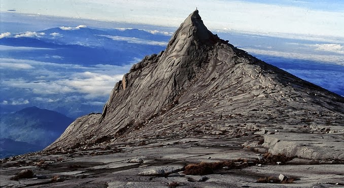
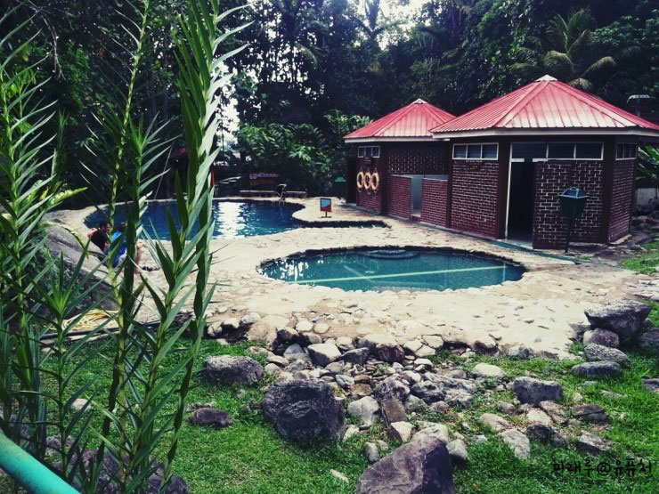
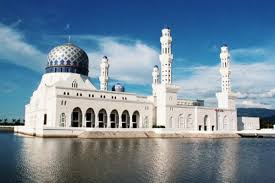
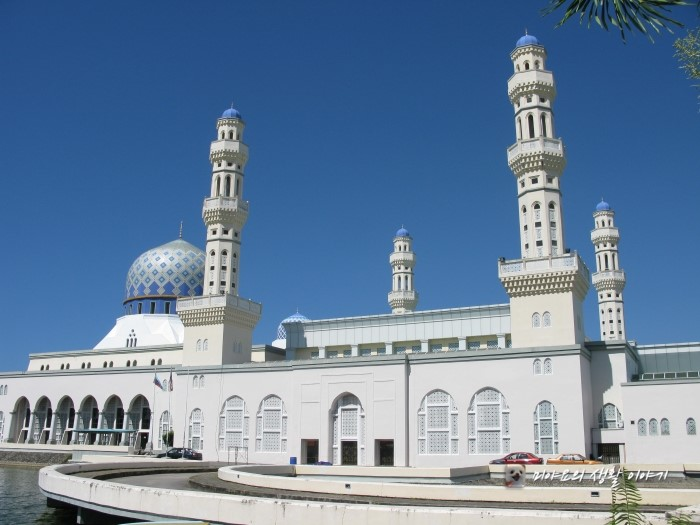

해양스포츠를 즐기기에 가장 적합한 사피섬 투어!
여러 섬 중에서 스노쿨링 하기에 가장 적합하기도 하고 안전요원도 잘 갖춰져 있어
많은 관광객들이 해양 스포츠를 즐기기 위해 오는 섬이다.
<패러세일링>
<스노쿨링>
키나바루산 투어/포링온천 투어
동남아시아의 최고봉 키나바루산!
등산객들이 찾는 유명한 산이기도 하다.
또 이곳에는 포링온천이 있어 온천욕을 하러 많이 온다.
수영장과 야외온천도 있어서 함께 즐기기 정말 좋은곳이다.


<키나바루산 전경>
<포링온천>
나나문 반딧불 투어
한국인들이 가장 좋아하는 낭만적인 반딧불 투어!
현재까지 가장 사랑받고 있는 반딧불 투어 명소이다.
반딧불 개체수가 아주 많으나 시내에서 먼 것이 흠이다.
만따나니 섬을 간다면 패키지로 하는 게 가격도 저렴하고 가깝기 때문에 좋다.
주의 : 반딧불 투어는 사진촬영이 불가함!
<만따나니 섬 원숭이>
<반딧불 투어 전 대기장소>
블루 모스크
이스탄불에 있는 모스크! <블루 모스크>는 영어 통칭으로,
모스크 내벽을 장식하는 장식 타일의 기조가 청색이기에 이렇게 부른다.
이 곳에서 사진촬영을 하면 인생샷을 건질 수 있을지 모른다.


<블루모스크>
이마고몰
해외 여행의 마지막은 뭐니뭐니해도 쇼핑!
이마고몰은 코타키나발루 쇼핑의 메카이다. 관광품을 비롯해서 음식, 옷까지 다양하게
판매하고 있다. 특히 만들어지지 얼마 안된 곳이라 깨끗하고 저렴하다.